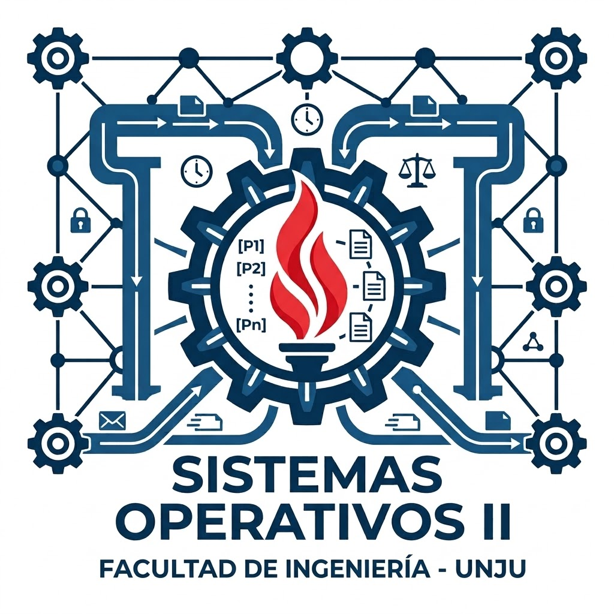

Agentes de IA y Protocolo MCP para evaluación continua y autoevaluación en materias de Ingeniería en Informática
Ejercicios, trabajos prácticos y exámenes generados por agentes bajo especificación, con autoevaluación inmediata y supervisión docente · UCSE + UNJu
Problema
En cátedras de programación y sistemas con ~100 alumnos por cohorte, diseñar ejercicios, exámenes equivalentes y devolver feedback a tiempo desborda al equipo docente.
El uso informal de chatbots genera resultados no reproducibles, alucinaciones y criterios de corrección variables.
- Feedback tardío
- Criterios dispares
- IA sin control
Objetivos
- Diseñar un toolkit de agentes de IA orquestados con MCP que genere ejercicios, TPs, exámenes y rúbricas a partir de especificaciones (SDD).
- Integrarlo con Git y CI (GitHub Actions / ClassMoji) para que el estudiante se autoevalúe en cada entrega.
- Medir su impacto en la regularidad de entregas y transferirlo a otros docentes.
Cómo funciona
El docente define, el agente genera, la CI evalúa y el docente decide.
-
1
Especificar
AGENTS.md,MEMORY.md, rúbrica ySDD.mdfijan reglas, programa y bibliografía de la cátedra. -
2
Generar con MCP
El agente lee el contexto vía MCP (solo lectura) y produce exámenes de 3 temas equilibrados, TPs, simuladores y cuestionarios.
-
3
Autoevaluar
Autograder + GitHub Actions / ClassMoji devuelven feedback en cada
push. -
4
Supervisar (HITL)
El docente revisa, ajusta y aprueba: la IA nunca tiene la última palabra.
Aplicado en 5 cátedras · 2 universidades
 Algoritmos y Prog.UCSE
Algoritmos y Prog.UCSE Programación IIUCSE
Programación IIUCSE- Modelos y SimulaciónUCSE

Sistemas Operativos IIUNJu Teoría de SOUNJu
Teoría de SOUNJu
Estado de avance
- Idea / diseño
- En desarrollo
- Prototipo funcional
- Resultados preliminares
Toolkit operando en 5 cátedras. Indicadores del 1.er semestre:
Datos agregados y anonimizados · Programación II (N=24, media 80 pts) y taller docente.
Próximos pasos
- Correlacionar Puntos de Ritmo con calificaciones finales.
- Medir concordancia agente vs. docente y tiempos de corrección.
- Consolidar la migración a ClassMoji y sumar cátedras.
- Publicar en revista DIFUSIONES (UCSE) y WICC/CACIC.
Lección clave: construir sobre estándares abiertos (MCP, Git, web) permitió seguir operando tras el cierre de GitHub Classroom.